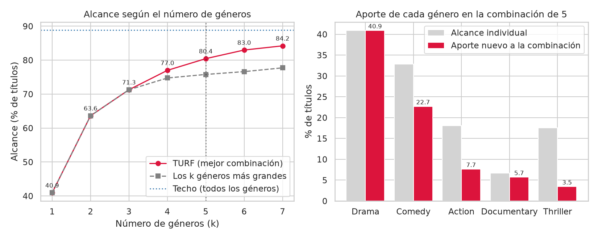
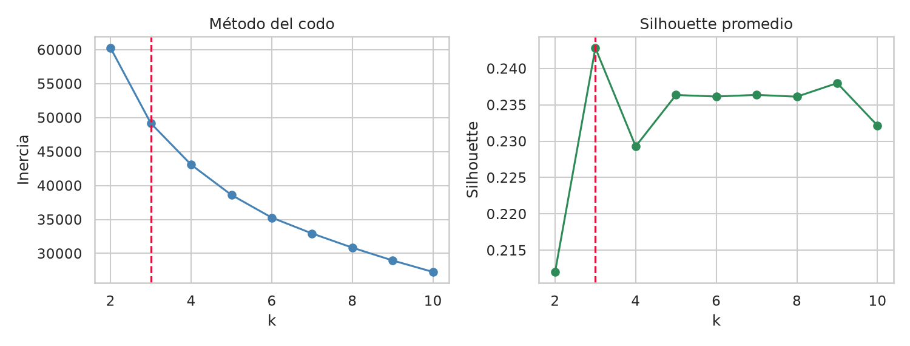
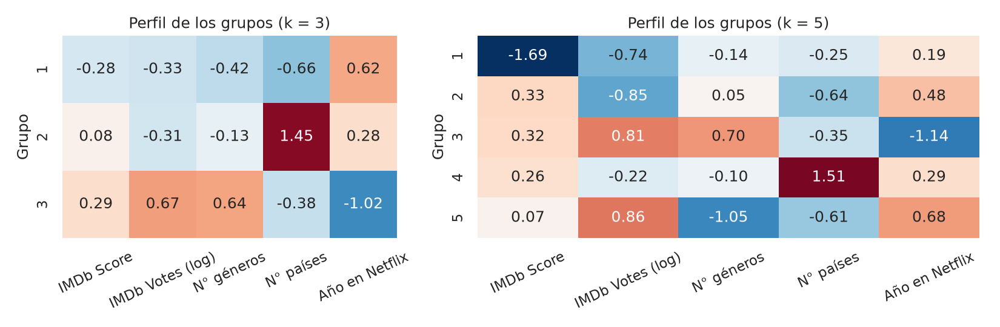
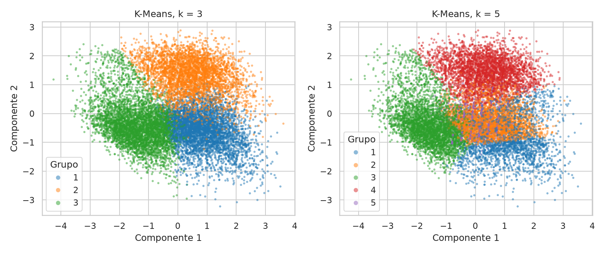
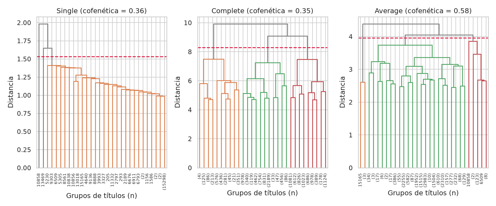

Diplomado de Técnicas Estadísticas y Minería de Datos
Octubre 2026
Dataset: Netflix_clean.csv 15,330 títulos · TURF con 12 géneros · Clustering con 5 variables
Reporte de análisis
1. TURF
Se tomaron como elecciones sí/no los 12 géneros con más títulos (Drama, Comedy, Action, Thriller, Romance, Crime, Adventure, Animation, Documentary, Horror, Family y Fantasy). Un género ya es dicotómico, así que no hizo falta un umbral, y hay solapamiento real entre ellos, que es lo que TURF aprovecha. El alcance es el porcentaje de títulos con al menos uno de los géneros elegidos. Se probaron todas las combinaciones de 1 a 7 géneros. Los 1,708 títulos sin género nunca se alcanzan, por lo que el máximo posible es 88.9%.
k
Mejor combinación (TURF)
Alcance
Ganancia
Los k más grandes
1
Drama
40.9%
+40.9
40.9%
2
Drama, Comedy
63.6%
+22.7
63.6%
3
+ Action
71.3%
+7.7
71.3%
4
+ Documentary
77.0%
+5.7
74.7%
5
+ Thriller
80.4%
+3.5
75.8%
6
+ Animation
83.0%
+2.5
76.6%
7
+ Horror
84.2%
+1.2
77.7%

Alcance según el número de géneros (izquierda) y aporte de cada género a la combinación de 5 (derecha).
Recomendación: promover Drama, Comedy, Action, Thriller y Documentary, con lo que se llega al 80.4% de los títulos (90% del máximo posible) y 1.44 géneros por título alcanzado. Tomar los 5 géneros más grandes (con Romance en lugar de Documentary) se queda en 75.8%. Documentary tiene solo 6.7% de alcance propio, pero casi no se cruza con otros géneros, así que casi todo lo que aporta es nuevo (5.7 puntos). Thriller llega a 17.5% solo, pero se solapa con Drama, Action y Crime y aporta 3.5. Pasar a 6 géneros sumaría menos de 3 puntos.
2. K-Means
Se agruparon los 15,330 títulos con cinco variables: IMDb Score, IMDb Votes (log), número de géneros, número de países y año de llegada a Netflix. Hidden Gem Score se dejó fuera porque correlaciona -0.79 con los votos. Las variables se estandarizaron. El codo no es muy marcado, pero la inercia baja menos después de k = 3 (de 2 a 3 grupos baja 11,094 y de 3 a 4, 6,103), y el silhouette es máximo en k = 3 (0.243). Se ejecutó también k = 5.

Método del codo y silhouette para k de 2 a 10; la línea roja marca k = 3.

Perfil de los grupos: media estandarizada de cada variable (0 = promedio del catálogo).

Grupos de K-Means proyectados en los dos primeros componentes principales (51.7% de la variabilidad).
Grupo 1, recientes y de poca difusión (40.7%). Llegaron en 2019 en promedio, están en pocos países (3.3), tienen pocos votos (unos 1,700) y 1.6 géneros. Tienen la calificación más baja (6.20).
Grupo 2, catálogo global (27.1%). Disponibles en 33 países en promedio, con calificación media (6.57), pocos votos y 2.1 géneros.
Grupo 3, establecidos y populares (32.2%). Llegaron antes (2015.9), tienen muchos votos (unos 24,000), 3.3 géneros y la mejor calificación (6.80).
Con k = 5 se separan además los títulos de calificación muy baja (4.69, 13.5%), los de buena calificación pero pocos votos (22.1%) y los que casi no tienen géneros (14.6%); el grupo global y el de establecidos se mantienen. Los silhouette de 0.24 indican que los grupos se tocan: son tendencias del catálogo y no clases separadas.
3. Clustering jerárquico
Se aplicaron los métodos single, complete y average (distancia euclidiana, mismas variables estandarizadas, 15,330 títulos). Se eligieron 3 grupos: en complete el mayor salto de altura (1.59) está entre la unión de 4 a 3 grupos (7.50) y la de 3 a 2 (9.09), y con el mismo número de grupos se puede comparar con K-Means.

Dendrogramas (truncados a 30 hojas; entre paréntesis, el número de títulos). La línea roja marca el corte en 3 grupos.
Single encadena: pega los títulos uno por uno a un bloque enorme. Con 3 grupos queda uno con 15,328 títulos y dos títulos aislados (uno con calificación de 1.7 disponible en 35 países y otro con 12 géneros).
Average se comporta parecido: 15,191 títulos (99.1%), 135 con muchos géneros (6.8 en promedio) y 4 con calificación de 8.75, unos 10 votos y disponibles en 35 países. Son atípicos más que grupos.
Complete es el único con grupos parejos: multigénero (13.9%, 4.6 géneros en promedio), calificación baja y pocos géneros (41.1%, IMDb 5.76 y 1.55 géneros) y calificación alta (45.0%, IMDb 7.16 y 2.3 géneros). En país y año los tres son casi iguales al promedio.
4. Comparación K-Means vs. jerárquico
Método (3 grupos)
Grupo mayor
Grupo menor
Silhouette
Davies-Bouldin
Calinski-Harabasz
K-Means
40.7%
4,157
0.243
1.52
4,285
Jerárquico, complete
45.0%
2,138
0.081
2.66
1,448
Jerárquico, average
99.1%
4
0.179
1.02
150
Jerárquico, single
99.99%
1
0.409
0.40
7
Métricas sobre los 15,330 títulos. Menor Davies-Bouldin y mayor silhouette y Calinski-Harabasz indican grupos mejor definidos.
El silhouette de single (0.409) y el Davies-Bouldin de average y single engañan: salen buenos porque unos pocos títulos aislados quedan lejos de todo, pero con 99% de los títulos en un solo grupo la partición no segmenta nada.
K-Means y complete son los únicos con grupos de tamaño razonable, y K-Means es mejor en las tres métricas (silhouette 0.243 contra 0.081).
Las particiones casi no se parecen (ARI de 0.018 entre K-Means y complete): K-Means separa sobre todo por países y año de llegada, y complete por calificación y número de géneros.
5. Conclusiones
TURF: la combinación recomendada es Drama, Comedy, Action, Thriller y Documentary (80.4% del catálogo). Elegir por solapamiento gana 4.6 puntos sobre elegir los géneros más grandes.
Clustering: se recomienda K-Means con k = 3: grupos balanceados, mejores métricas y una lectura clara (recientes de poca difusión, catálogo global y establecidos populares). El jerárquico complete queda como alternativa si se quiere segmentar por calificación y géneros; single y average se descartan por el encadenamiento.
Con un silhouette máximo de 0.24, el catálogo no tiene grupos naturales bien separados: los grupos describen tendencias, no categorías.